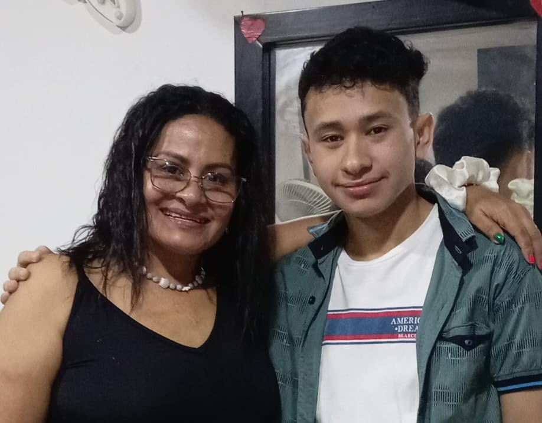

¡Feliz Cumpleaños, Mamá! 🎉
Hoy es tu día y mereces todo lo mejor 💫
Gracias por tu amor incondicional 💕
Eres la mujer más fuerte y hermosa que conozco 🌟
Que la vida te llene de alegría y salud 🌸
Eres mi ejemplo, mi refugio y mi inspiración ❤️
Te amo con todo mi corazón 🥰
¡Que cumplas muchos más, mamita! 🎂✨
Hoy es tu día y mereces todo lo mejor 💫
Gracias por tu amor incondicional 💕
Eres la mujer más fuerte y hermosa que conozco 🌟
Que la vida te llene de alegría y salud 🌸
Eres mi ejemplo, mi refugio y mi inspiración ❤️
Te amo con todo mi corazón 🥰
¡Que cumplas muchos más, mamita! 🎂✨
Para la mejor mamá del mundo 💖

💖💕💗💝
¡Sopla las velas! 🎂
¡Pide un deseo, mamita!
Te amo con todo mi corazón 💖
👑 Eres la reina de mi vida 👑